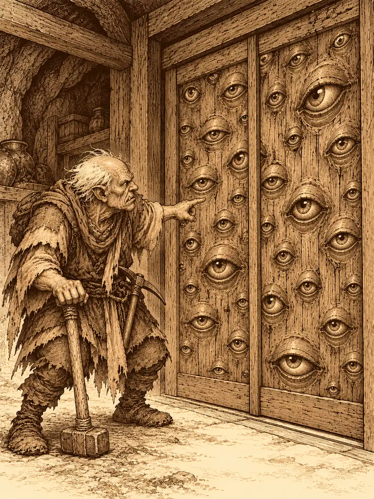

Capítulo 73
Mis yokai
Libro V · Los guardianes del Norte y del Sur
El carro los dejó a la entrada de Ukio con el sol de la tarde dándoles de lado y una semana de camino metida en los huesos. Aka bajó la primera y se quedó mirando los campos. Nunca había visto tanto verde junto. Había crecido entre muros, en la capital, y aquello, los huertos que se derramaban hasta los senderos, las casas bajas, el olor a tierra regada, le pareció otro mundo. Desde la conversación con Katari andaba distraída, con un dolor de cabeza que iba y venía y unas ganas de estar sola que no sabía explicar. Lo aguantaba como podía. Había órdenes que cumplir.
Venían los cuatro porque les había llegado una carta. Unos cultistas habían entrado en la base de los cazadores de Ukio, la base secreta. Si sabían dónde estaba, podían volver.
Shigeru miraba los campos de otra manera. Antes de dejar el campamento del sur se había ofrecido a ayudar a reforzar sus defensas, y en Sho le había escrito otra carta a su familia para contarles que por fin había hablado con el shogun. Aquí no había muros. Ni uno. Solo casas, huertos y caminos. Era el sitio perfecto para practicar lo que había aprendido en los papeles del librero, y de paso para aprender cómo se hacía un muro que algún día sirviera en Miyamoto.
Blaze iba detrás, con su zumo de la última posada en la mano, dándole vueltas todavía al sueño de aquella noche: a la niña del casco, al viejo que hablaba y no la escuchaba. Seguía sin saber quién era la niña. Nadie se lo había dicho.
Y cerraba la marcha Corco, el anciano semiorco, sordo como una piedra, que se había pasado el viaje buscando vetas en cada roca del camino y contándole a quien quisiera oírlo las historias de su antigua horda.
Aka preguntó a un campesino por la seguridad del pueblo. El hombre se apoyó en la azada.
"¿Seguridad? Los samuráis pasan de vez en cuando. Una o dos veces a la semana. Suerte que vinieron los cazadores".
"¿Dependéis enteramente de ellos?".
"Tú lo sabrás. ¿No trabajas para el shogun? A los pueblos del norte les mandan refuerzos. Aquí, nunca".
Aka sacó un papel y empezó a apuntar quejas. El hombre se fue refunfuñando con sus sacos de patatas.
Corco le preguntó a otro dónde estaba la casa secreta de los cazadores.
"Si es secreta, ¿cómo te lo voy a decir?".
"Me han dicho que la busque".
"Si fueras cazador, ya sabrías dónde está".
Shigeru sacó su insignia. El campesino se la quedó mirando con curiosidad, porque era la primera que veía. Le aconsejó que se la guardara antes de que la viera Shizuka, que se creía la jefa y no tenía ninguna.
En la taberna, Kitaro les sirvió agua, zumo y cerveza, y algo del horno para el sordo. Le preguntó a Corco qué le pasaba en el brazo. Lo tenía medio transparente, como si una parte de él se hubiera quedado en otro sitio.
"Me morí. Los cazadores me resucitaron".
Kitaro se lo hizo repetir tres veces y al final se lo apuntó en un papel. Luego se le acercó al oído y le preguntó si entonces era un zombi. Corco le explicó, a gritos, que no: estaba vivo. Más o menos.
Kitaro, al saber que eran cazadores, se ofreció a indicarles el camino a la base. Shigeru le contó que quería levantar un muro alrededor del pueblo y que buscaba al mapache, a Ikari, para aprender de él. Blaze, en otra mesa, le contaba a un mago del pueblo lo poderosas que eran sus llamas. El mago le aconsejó que aprendiera algo de prudencia.
"¡Kitaro! ¡Necesito cosas!".
Por la puerta entró una niña con orejas puntiagudas, una kender pequeña con una lista en la mano: alpiste para el gato, comida para el mono, para este, para este otro. Se la dio a Kitaro y se volvió.
"¡Aka! ¿Qué haces aquí?".
"Nos llegaron noticias del ataque".
"Pues venid conmigo. Yo sé dónde está la base. Soy la jefa".
Les fue enseñando el pueblo de camino, a la carrera, sin esperar a nadie. La casa de Madame Jone, que tenía una esfera mágica donde se metían monedas y a veces salían más; Aka puso veinte y no salió nada, y Corco le besó la mano a la madame con los ojos como platos. El pescador Haru, que les dio treinta monedas a cada uno de la pesca del mes; Shizuka le contó a Corco en voz baja que lo tenían un poco extorsionado, que le habían comprado el barco y ahora trabajaba para ellos. La tienda de la maga, que fabricaba cosas por un precio; Aka compró una poción para hablar con los animales y pidió que se la envolvieran en papel de seda, porque era para una amiga.
Y la casa de los shinobi. Antes de entrar Shizuka le advirtió a Aka que no se asustara: eran ninjas, al principio habían sido malos, pero ahora trabajaban para los cazadores y los mandaban a robar suministros a la gente mala. Tenían dos. Aka sacó una bolsa con trescientas monedas y la dejó sobre la mesa.
"Para formar dos más. Si podéis robar a los enemigos del shogunato, os lo agradeceré".
Les trajeron materiales, monedas y flechas.
Shizuka se quejó de que los cazadores pasaban demasiado tiempo en Sho y nada en Ukio, que era donde se ganaba dinero. Dijo que la única que tenía dinero era Danifae, que era la mejor, que la cuidaba. Que a veces se iba a hacer cosas que no le podía explicar porque era muy pequeña.
"Y luego vuelve manchada. Pero no sé de qué".
Aka lo apuntó también.
La base estaba debajo de una casa. Shizuka movió algo y aparecieron unas escaleras. Abajo los recibieron dos mujina pequeños y peludos que la saludaron muy serios. Aka les preguntó si eran parientes de Tip y Top.
"¿Tip y Top están vivos?".
Los dos salieron corriendo pasillo adentro, chillando de alegría, sin abrir siquiera la puerta.
La puerta era una puerta corredera japonesa llena de ojos, decenas de ojos que parpadeaban. Shizuka dijo que era su amiga. La habían rescatado de una casa y ahora los protegía. Corco le dio un codazo a Shigeru.
"Oye, canijo. Esa puerta me está mirando".
Dentro dormía el kamaitachi, enroscado en un rincón, con las cuchillas plegadas. Lo habían salvado herido una vez y desde entonces siempre dormía. Shizuka se acercó de puntillas y lo acarició. Aka también lo acarició, conteniendo el aliento; nunca había visto uno tan de cerca y vivido para contarlo. Blaze lo imitó. Más allá estaba el inugami, un yokai con cabeza de perro que usaba magia para construir cosas.
"Yo soy mejor maga que tú", le dijo Blaze.
"Mi magia no pretende ser destructiva, muchacha".
"A ese lo llamamos Rumba", dijo Shizuka señalando a un pequeño yokai del polvo, hecho de pelusa, que limpiaba el suelo sin descanso. "Cuidado, que es de pelo. Si le pegas fuego, arde".

Había un gato enorme junto a la cuna del bebé, vigilándolo. Había un mono, uno solo, que andaba triste por la base; el resto habían muerto el día del Rey Mono. Y había un tanuki borracho dormido encima de la mesa. Era Mosto, el primo de Ikari. Shigeru se interesó mucho, porque buscaba precisamente a Ikari para aprender su oficio. Mosto abrió un ojo, le preguntó si quería pelea, le amenazó con su primo y se volvió a dormir.
Shizuka les contó lo del ataque. Le habían tirado un rayo y la habían dejado casi muerta. Según ella, la había curado Erk.
"Entraron por la puerta. Han encontrado nuestra base".
Al caer la tarde volvió Lor Miau, el gato negro de dos colas. Corco se puso en guardia, porque recordaba cuando aquel gato se había vuelto loco y casi los mata a todos. El gato le bufó y se subió a su sitio de siempre, encima de un mueble, a dormir.
Pasaron la tarde allí. Dieron de comer a las criaturas, aprendieron sus nombres, se conocieron. Aka y Shigeru hablaron de muros y de alarmas. Luego cenaron.
La cena terminó con un ruido.
Venía de la sala de al lado. Eran voces, unas voces oscuras, como si alguien estuviera invocando algo. Aka se levantó con la comida a medio terminar, cogió el arco y se asomó por la rendija de la puerta.
En mitad de la sala se había abierto un portal. Delante de él había un hombre con la ropa de los cultistas, pero más rica que la de los otros: bordados dorados, un gorro alto y puntiagudo. Movía las manos y hablaba en una lengua que se pegaba a los oídos como brea.
"Obedeced".
Todas las criaturas de la sala se retorcieron. Los mujina, el gato grande, el inugami, la pequeña Rumba. Se les pusieron los ojos rojos, inyectados en sangre, y se volvieron hacia los cazadores con la misma rabia que si nunca los hubieran visto.
Shigeru se lanzó de cabeza contra el hombre del gorro y lo golpeó con todo lo que tenía.
El gato grande saltó sobre Corco. El viejo semiorco, que estaba cenando tranquilamente, recibió el zarpazo de lleno. Luego el gato empezó a moverse como él, a copiar cada uno de sus gestos, y por un momento pareció que en la habitación hubiera dos semiorcos viejos. El anciano entró en furia. Creció hasta hacerse tan grande como el gato y le devolvió los golpes. Los mujina se le echaron encima a morderle los pies.
El inugami tocó a Rumba con una magia que la volvió rápida, rapidísima. La pequeña criatura de pelusa lanzó sus pelos contra Shigeru como agujas, se le enrolló alrededor del cuerpo y lo dejó atrapado.
A Blaze la rodearon cuatro mujina a la vez. Levantó un muro de fuego delante de ella y las criaturas que lo tocaron ardieron.
El hombre del gorro ya no estaba. Se había vuelto invisible. Aka cerró los ojos, los abrió, y vio lo que no se veía. Disparó dos flechas seguidas, tan rápido que la segunda salió antes de que la primera llegara.
La puerta de ojos disparaba rayos. Uno a Aka, otro a Blaze, otro a Shigeru. El inugami les echó encima una magia pesada que los volvió lentos a todos. Corco aguantaba en medio de la sala con el gato, los mujina y medio mundo encima.
Mosto se despertó, se tambaleó y le dio un puñetazo al gato. Luego otro a Corco.
"¡Dejad a mis amigos!".
No distinguía a nadie.
Shigeru consiguió zafarse de Rumba. Y entonces se despertó el kamaitachi.
Se levantó despacio, todavía como en un sueño, y de pronto ya no estaba donde había estado. Cruzó la sala de lado a lado tan deprisa que nadie lo vio moverse, y a su paso todos sangraban: Blaze, Shigeru, Aka, Corco. Blaze se desplomó sin sentido.
Lor Miau se había despertado también. Miraba desde lo alto. No parecía dominado por nada. Solo miraba.
Aka acertó al hombre del gorro con otra flecha y la invisibilidad se le rompió. El cultista, medio desangrado, todavía tuvo tiempo de lanzarle algo a Shigeru que lo dejó paralizado de pies a cabeza. Los mujina seguían mordiendo a Corco. El gato seguía arañándolo. El viejo seguía en pie.
La última flecha de Aka le atravesó el pecho al invocador.
Algo rodó de su cuerpo hasta los pies de la arquera. Era una esfera pequeña, chispeante, como si estuviera a punto de romperse. Aka no la tocó con la mano. La envolvió en un trozo de tela, la apartó y se quedó vigilándola.
La esfera empezó a moverse sola. A temblar. Y reventó. Salió humo de la tela. Cuando Aka la miró, estaba destrozada, y tenía las marcas de un par de flechas suyas.
En ese momento los yokai se llevaron las patas a la cabeza. Se tambalearon, mareados, como quien se despierta de un mal sueño. Los mujina se cayeron al suelo. El kamaitachi se fue a un rincón, apartado, temblando. El gato grande se lamió las heridas y fue a ver al bebé.
Aka le dio una poción a Blaze y la muchacha abrió los ojos.
"Me duele todo. ¿Qué ha pasado? ¿Se ha muerto el malo?".
Shigeru se acercó al cuerpo del invocador. Era un humano cualquiera, con aquella ropa ostentosa. No lo reconoció. Y empezó a pegarle. Le pegó con toda la rabia que llevaba dentro desde hacía semanas, hasta que se cansó.
Shizuka estaba de rodillas en el suelo. Delante de ella había un puñado de pelusa chamuscada.
"¿Qué habéis hecho con la Rumba? ¡Está quemada!".
"Ha sido el hijo de perra este", le dijo Shigeru, y le dio otra patada al cadáver. "Él los ha controlado a todos".
"Pero la Rumba era mi amiga".
Lor Miau bajó de su sitio. Pasó entre las piernas de Shizuka, frotándose, y se acercó al pequeño cuerpo de pelusa. Hizo algo, nadie supo exactamente qué. Y la Rumba se movió.
Volvió a levantarse. Se le notaba que ya no era la misma: se movía de otra manera, con la torpeza de Gluglu, y hacía el mismo sonido que él. Era una zombi. Shizuka la abrazó igual.
"¡Ha vuelto!".
Corco estaba sentado en el suelo, con la espalda contra una silla volcada.
"Tenía seis bichos agarrados. Ya no estoy para estos trotes".
Shigeru le tendió la mano y lo ayudó a levantarse. A la espalda del viejo le crujió algo. Mosto, todavía borracho, se le acercó para darle otro puñetazo, y Shigeru le desvió el brazo con un gesto rápido. Mosto se cayó al suelo y se quedó dormido otra vez. Los mujina se le pusieron a Corco alrededor de los pies, acariciándolo, mirándolo, pidiéndole perdón a su manera.
El inugami se acercó a Aka y le hizo una reverencia.
"Ya van dos ataques, señorita. Esto es peligroso. Llevo tiempo pensando una idea. Instalar portales en cada una de vuestras bases. Si sufrimos otro ataque, podríamos dar aviso y vendrían otros cazadores enseguida. Harían falta magos poderosos. Y el apoyo del shogun".
"Se lo diré al shogun en cuanto pueda. Esto necesita seguridad ya".
El inugami se retiró. Al fondo de la sala, Shizuka seguía sentada en el suelo, abrazada a la Rumba, que gorgoteaba contra su pecho como un hombre pez.